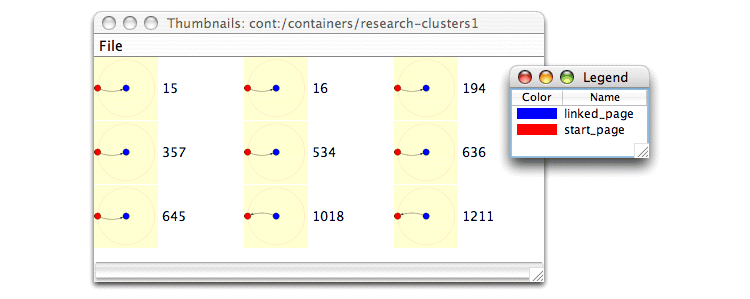
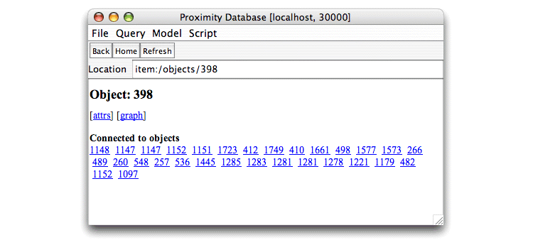

You can use the Proximity Database Browser to examine the results of the queries you execute. The Proximity Database Browser supports examining the subgraphs and containers created as a result of executing queries via both browser-style access (clicking identifiers to see that item’s details) and direct access via the location bar. The following exercise illustrates how to use both of these methods to examine the contents of the container created in the previous exercise. See Appendix A, Proximity Quick Reference for a summary of how to access Proximity database elements using the location bar.
Exercise 5.2. Exploring containers and subgraphs:
This exercise requires the container created in Exercise 5.1. You must have completed Exercise 5.1 before beginning the current exercise.
Before beginning, make sure that you are serving the ProxWebKB database using Mserver. Start the Proximity Database Browser if it is not already running.
-
Click Home to go to the Proximity Database Browser start page.
-
Click Containers or enter
cont:/containersin the location bar. Use thecont:protocol to access containers using the location bar. Proximity displays the list of top-level containers in the ProxWebKB database.
The initial container page shows that you are exploring the contents of the root container. The root container is provided as a convenience for accessing a database’s other containers; it does not explicitly exist in the database. The location bar path
cont:/containerscorresponds to the root container. -
Click research-clusters1 or enter
cont:/containers/research-clusters1in the location bar. Proximity displays a list of subgraphs in the research-clusters1 container.
The research-clusters1 page lists the ID numbers of the first 200 subgraphs in the container. Click a page number at the bottom of the page or add the page number modifier to the end of the location bar path (e.g.,
cont:/containers/research-clusters1#2) to display more subgraph IDs. Depending on the query, subgraph identifiers may or may not correspond to object identifiers in the database. In general, you should not assume that the subgraph labels correspond to other database entities.To access any container using the location bar, use the
cont:protocol and a UNIX-like path to the target container. In this example, the research-clusters1 container is a child of the root container, so the full path to this container iscont:/containers/research-clusters1.Each container page includes a list of container actions at the top of the page:
-
The view query action displays the query used to create this container. Proximity displays the query in the Query Editor. You must have a copy of
graph-query.dtdin the directory from which you launched the Proximity Database Browser (i.e.,$PROX_HOME) to view the query. Note that containers created by means other than querying (e.g., via scripts) and containers created in Proximity 4.2 or earlier versions do not store the originating query with the resulting container. The view query option is disabled for these containers. -
The delete action deletes the current container. You cannot delete the root container.
-
The attrs action displays any attributes for the current container. Although you can create container attributes for your own purposes, Proximity does not currently use container attributes other than to store the XML version of the query used to create the container. (The Proximity Database Browser may not display the value of the qgraph_query attribute correctly; use the view query action to display the query in the Query Editor instead.)
-
The query action executes a query against the contents of the current container. See “Querying Containers” for additional information on querying containers.
-
The thumbs action displays thumbnail images of a random selection of up to nine subgraphs from this collection.
These actions are disabled for the root container.
-
-
Click thumbs. Proximity displays a set of thumbnail images of up to nine randomly selected subgraphs from this container. Because the thumbnails are selected at random, you may see a different set of subgraphs than those shown below.

The thumbnails show that each subgraph in the research-clusters1 container has the same structure: two objects connected by a single link.
-
From the thumbnail window File menu, choose Show Color Legend. Proximity displays a key that shows how vertex colors in the thumbnails map to vertex labels from the query.
 -
Click to select a thumbnail. From the thumbnail window File menu, choose Open Selected Subgraph. Proximity displays a full-size graph of the selected subgraph.
![[Tip]](images/tip.png)
You can also display a full-size graph of a subgraph in the thumbnail window by double-clicking the corresponding thumbnail image.
More information on using the full-size subgraph display is included later in this exercise.
-
From the Proximity Database Browser, click 0 or enter
subg:/containers/research-clusters1/0in the location bar to see the contents of subgraph 0. Proximity displays information about this subgraph.
The subgraph page includes a list of subgraph actions at the top of the page. These actions provide additional information about the subgraph and enable navigation within the container.
-
The attrs action displays any attributes for the current subgraph.
-
The graph action displays a graph of the subgraph.
-
The prev action displays the previous subgraph in the container. This link is disabled if you are viewing the first subgraph in the container.
-
The next action displays the next subgraph in the container. This link is disabled if you are viewing the last subgraph in the container.
-
The up action returns to the parent container page.
Subgraph information includes a list of the subgraph’s member objects and links, identified by “(O)” or “(L)” respectively. The names of the objects and links in a subgraph correspond to the vertex and edge labels from the query that produced this subgraph. The listed objects and links point to the actual database entities, not copies.
As we saw in “Using the Location Bar”, the location bar protocol changes when you access individual entities instead of lists of entities. In this case, to access an individual subgraph, we use the
subg:protocol. The container path remains the same, but we add the target subgraph ID to the end of the path.If your database includes an attribute whose values provide semantically meaningful labels for objects, such as a title attribute for movies, you can set the Proximity Database Browser preferences to display this attribute value instead of object IDs. See “Setting Display Preferences” for information on using this feature. (The ProxWebKB database does not provide a suitable attribute for this purpose, therefore we continue to display object IDs in the Proximity Database Browser for the remaining exercises.)
-
-
Click graph to display a graph of this subgraph. Proximity opens a new window displaying a graph of the objects and links in the subgraph. Hover the mouse over an object or link to see its OID.

-
Prev and Next buttons in the graph window change the display to show the previous or next subgraph, respectively, in the container. You can also use the Next and Prev commands from the Graph menu to change to another subgraph.
-
To display a key that shows how vertex colors in the graph map to vertex labels from the query, choose Show Color Legend from the Graph menu.
-
To change how items in the subgraph are labeled, choose either Set Object Labels or Set Link Labels from the subgraph Graph menu. You can label items with their OID, their names from the query, or the value of a selected attribute.
-
To display the details for this subgraph in a new Proximity Database Browser window, choose Browse Subgraph from the subgraph window Graph menu.
-
-
Right-click (Ctrl-click for Mac OS X) any object in the graph to display a context menu for that object. The context menu lists actions applicable to the selected object:

-
Choose Move to center to make the selected object the new center of the display.
-
Choose Browse object to display basic information about the selected object in a new Proximity Database Browser window.
-
Choose Browse object attributes to display attribute details for the selected object in a new Proximity Database Browser window.
-
Choose Browse database from object to graph the selected object and its immediate neighbors in the graphical data browser.
Close the legend and graph windows when you are through examining the graph.
-
-
Click the object and link IDs in the Items list to explore the individual items in this subgraph. For example, click start_page (O): 398 or enter
item:/objects/398in the location bar to see the details of the object in this subgraph that matched the start_page vertex from the QGraph query. Proximity displays the information for object 398. -
Click attrs or enter
item:/objects/398!ATTRVALSto display the attributes and values for object 398. Because object-based attribute lookup is computationally expensive in MonetDB, the main object page does not show the object’s attribute values. If necessary, scroll down to see the value of the pagetype attribute to confirm that this is a research project page. -
Return to the research-clusters1 container page. From the File menu, choose New Window to open a new Proximity Database Browser window. Arrange the windows so you can see the contents of both windows.
-
Display the contents of subgraph 0 in one of the windows. Display the contents of subgraph 2 in the other window. Notice that subgraphs 0 and 2 have the same start_page object.

-
Close the window for subgraph 2. In the other window, click Back to return to the page for subgraph research-clusters1.
-
Continue to explore the results of your query. When you are finished, continue to the next section.
The query created above matches individual objects and links in the database instead of groups of objects and links. To obtain results that group all the linked pages together for each research project page, we need to add numeric annotations to the query. The next section describes how to use numeric annotations in a Proximity query.